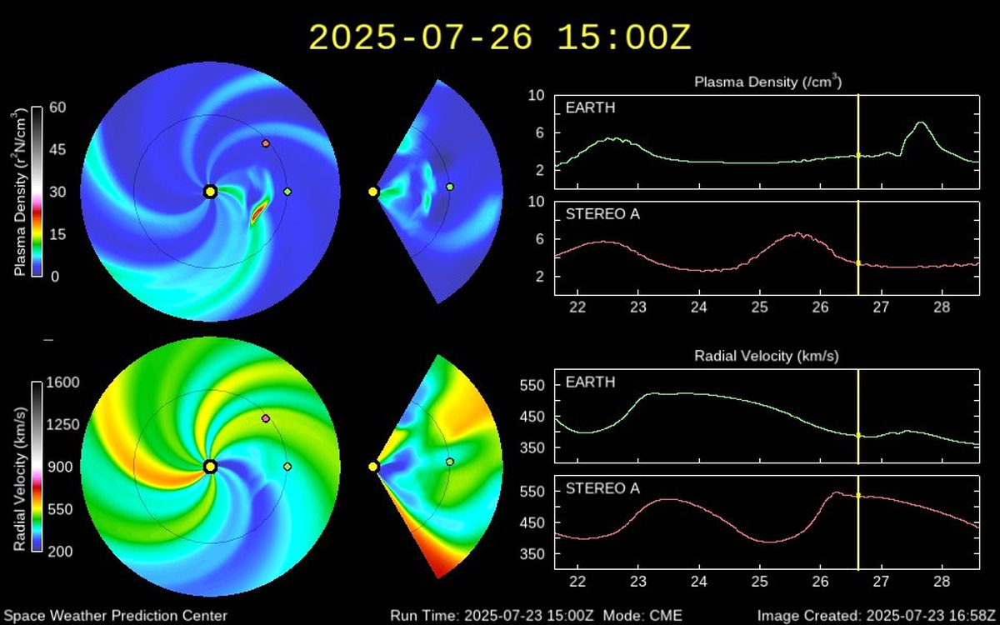

Вчера вечером жители северных регионов наблюдали необычайно яркое полярное сияние

Мощнейшая за последние десять лет солнечная вспышка вызвала редкое и яркое полярное сияние, которое наблюдалось над значительной частью России, особенно в северных регионах. Выбросы плазмы достигли Земли, спровоцировав сильную магнитную бурю. Ученые отмечают, что подобное явление происходит раз в десятилетие — небо окрасилось в зеленые, красные и фиолетовые оттенки.
